What is Finger Knitting?
Finger knitting is a simple technique where yarn loops are connected using your fingers instead of needles or a crochet hook.
Why Finger Knitting?
- No needles
- Easy to learn
- Create by hand
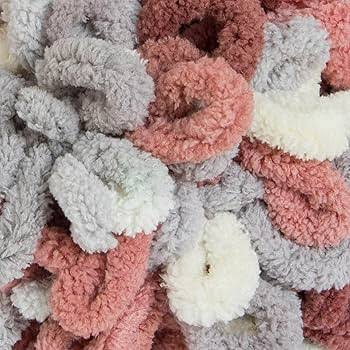
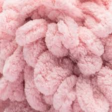
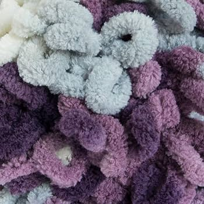
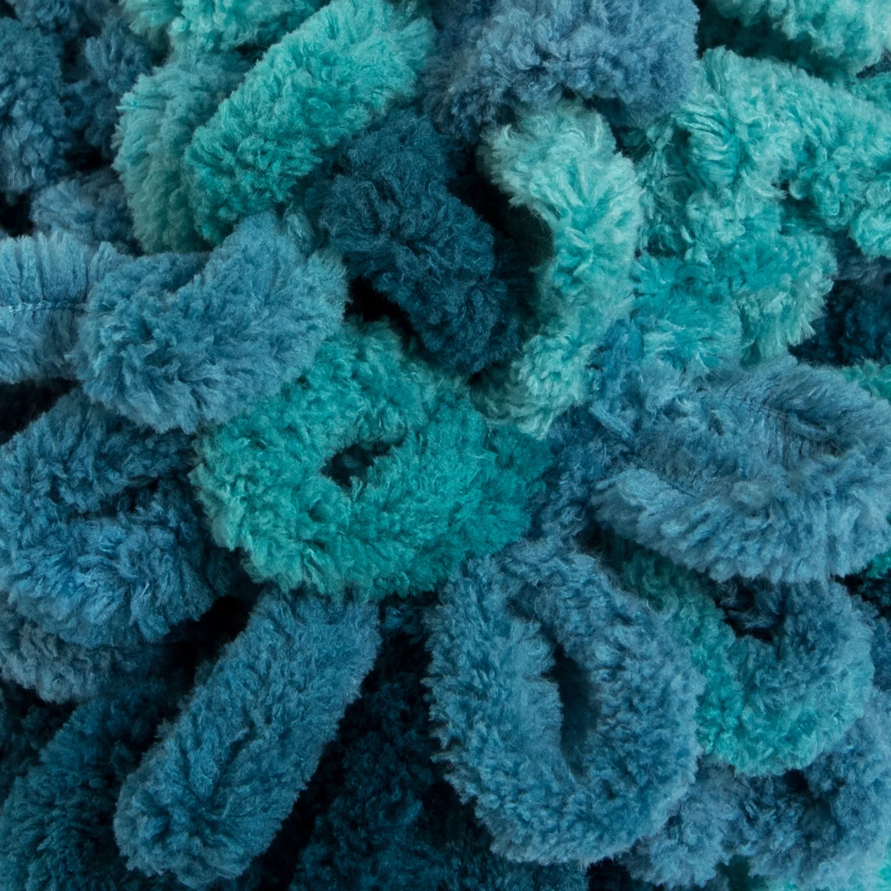
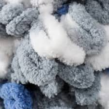
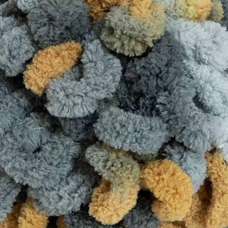
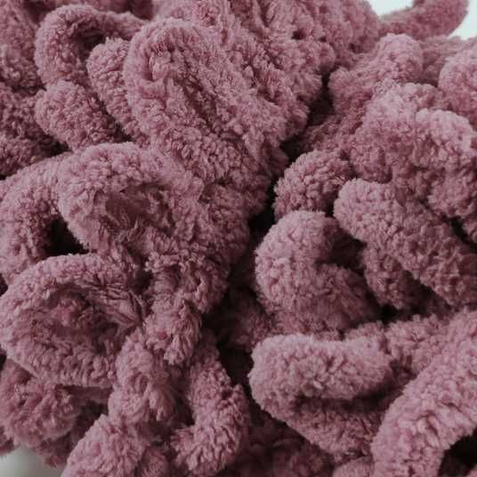
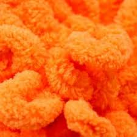
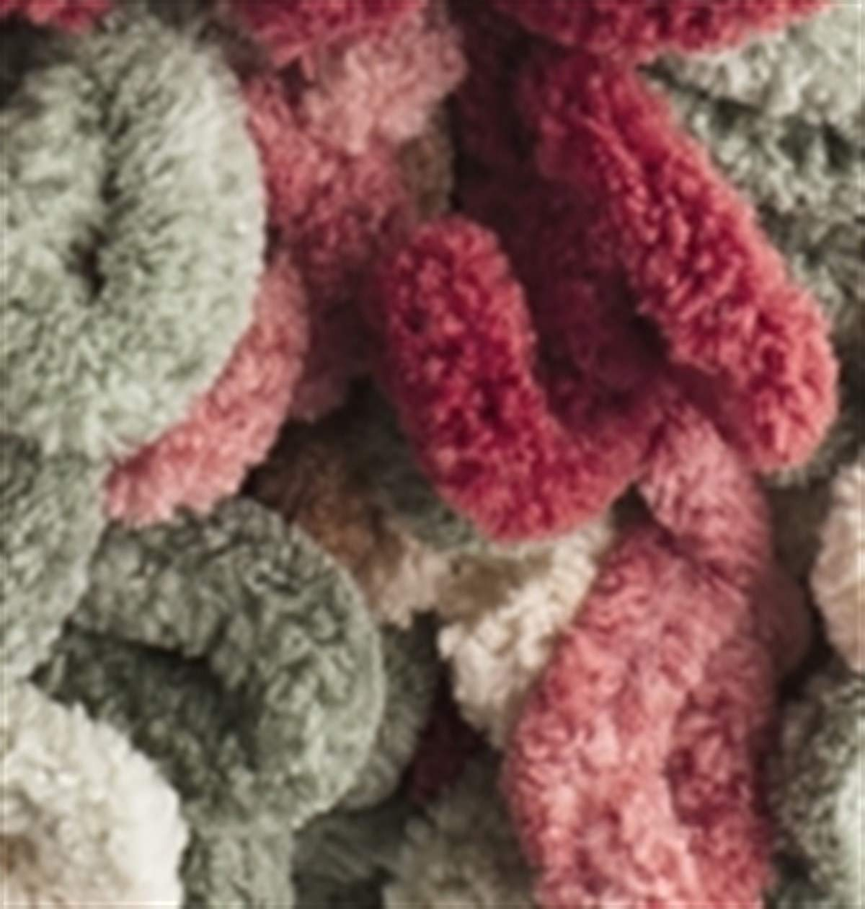
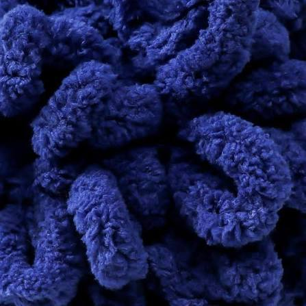
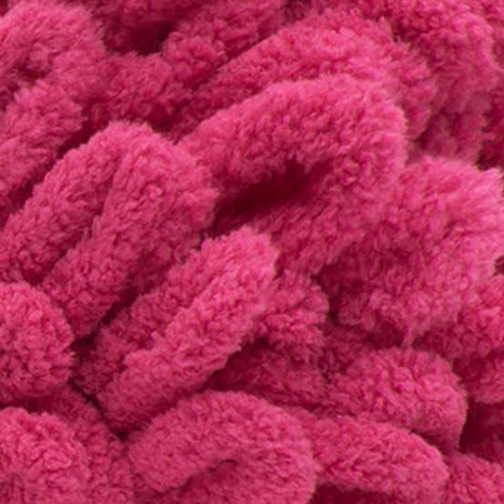
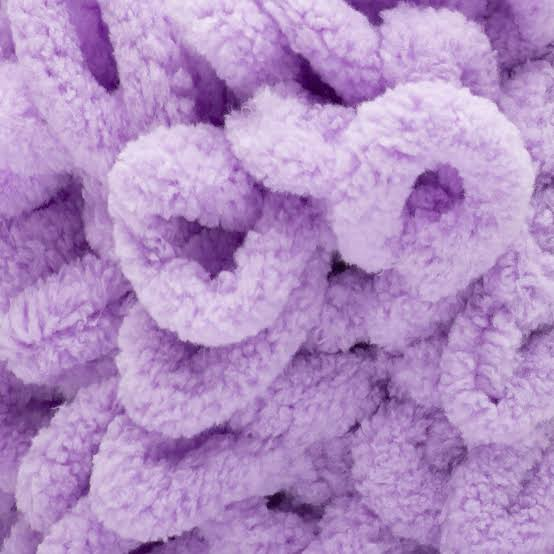
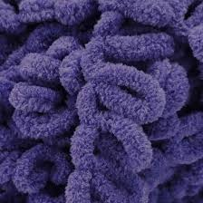
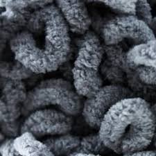
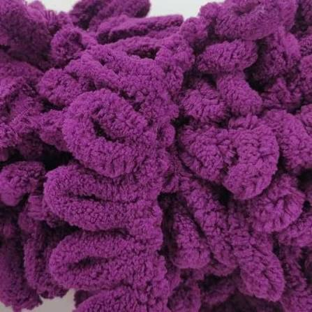
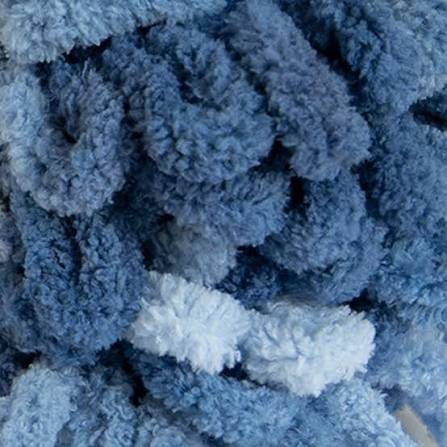
Materials
- Alize Puffy
- Alize Puffy More